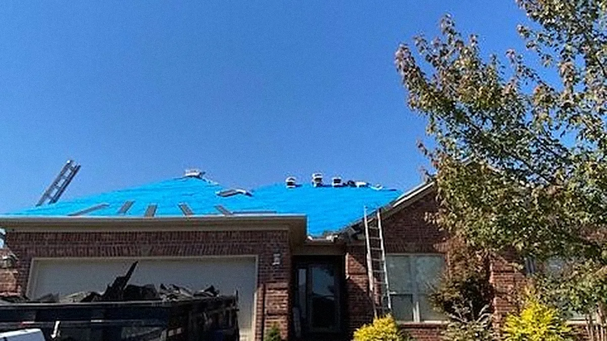

Roof replacement
When your roof is beyond repair, a full replacement is the best way to protect your home. It uses durable materials and proven installation methods so the new roof lasts for decades.
Read about roof replacement
Professional, reliable roofing for homeowners across Arkansas, from a full roof replacement to quick storm damage repairs.
When your roof is beyond repair, a full replacement is the best way to protect your home. It uses durable materials and proven installation methods so the new roof lasts for decades.
Read about roof replacement
Arkansas storms can bring heavy rain, wind and hail, leaving your roof vulnerable. The team can also help with insurance claims.
Read about storm damage repair
Your home deserves the best protection. Affordable, high-quality residential roofing from new installations to leak repairs.
Read about residential roofing
Prevent costly repairs with a professional roof inspection. The team checks for leaks, damaged shingles and weak spots.
Read about roof inspections and maintenanceFrom roof replacements to storm damage repairs, the team is here to keep your home safe. Trust a locally owned, fully insured roofing company that puts Arkansas homeowners first.

The company accepts the following payment methods.
Call or send a request. Estimates and inspections are free and no-pressure.